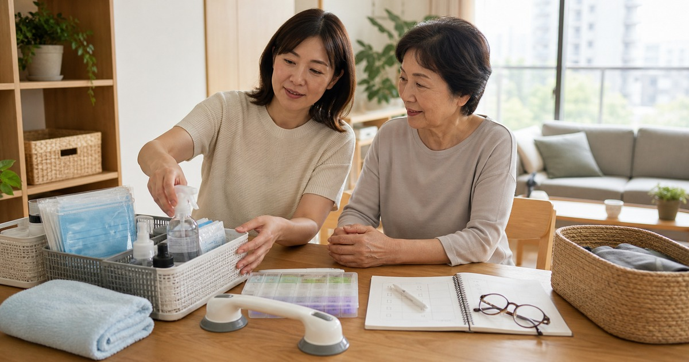

家裡有人需要照護時，先整理哪些用品：醫材通路、輔具與生活消耗品
照護用品先分成安全動線、日常消耗、清潔防護與專業確認，家裡才不會被臨時需求打亂。

當家裡有人需要照護，最急的通常不是買最多用品，而是先讓動線安全、消耗品找得到、清潔防護不斷貨。照護採買牽涉每個人的身體狀況與居家格局，不能用單一清單套用；這篇只整理家庭可以先盤點的方向，專業判斷仍應交給醫師、護理師、藥師或治療師。
先盤點家裡的三條路線
第一條是起身到浴室，第二條是床邊到餐桌，第三條是玄關到外出。這三條路線若有地墊、雜物、電線或光線不足，輔具買再多也未必能真正降低照護壓力。
先整理路線，再看是否需要扶手、防滑、夜燈、收納籃或移動輔助。任何涉及安裝、承重或身體支撐的用品，都建議先詢問專業人員。
照護用品也要考慮照護者的動線。若每次拿手套、酒精或毛巾都要彎腰翻找，長期下來也會增加疲勞。
- 床邊到浴室：光線與防滑優先。
- 餐桌到客廳：移除電線與低矮障礙。
- 玄關到外出：鞋子、雨具與輔具固定位置。
消耗品要有固定補貨量
口罩、酒精、手套、清潔用品、紙巾、濕紙巾或照護墊等消耗品，最怕一下子不夠，也怕過度囤積後忘記期限。家庭可以用一週或兩週為單位建立安全庫存。
標籤比收納盒更重要。每個人都知道哪一盒已開封、哪一盒是備品，照護者交接時會少很多口頭說明。
家庭成員之間最好約定一個補貨訊號，例如剩下一週用量就寫在筆記本。這比等到完全用完才臨時採買更穩。
- 開封品和備品分開。
- 標示期限和補貨日期。
- 容易拿取，但不要散落各處。
Elite 嚴選
醫材與輔具先看適用情境
醫材和輔具不適合只看照片或價格。尺寸、承重、材質、清潔方式、是否需專業調整，都會影響能不能安心使用。
里享生活醫材、強哥批發、富達醫材與志遠書局，可以從醫材通路、生活防護用品、照護器材與相關書籍資訊方向參考；選購前請回到商品頁標示與專業建議確認。
若用品需要多人操作，請把商品說明保留在同一個收納區。看得到使用限制，比憑印象操作更安全。
把照護筆記放在用品旁邊
照護家庭常有多人輪流協助。比起每次口頭交代，一本放在用品旁的筆記本更可靠：記錄補貨、使用方式、注意事項、專業人員提醒與下次回診問題。
這份筆記不是醫療紀錄的替代品，而是讓家庭成員知道日常用品怎麼拿、何時補、哪些情況要詢問專業人員。
- 記錄用品位置。
- 記錄開封和補貨日期。
- 記錄需要詢問專業人員的問題。
不要用採買取代專業判斷
照護用品的目標，是讓日常更有秩序，不是保證安全、治療或改善身體狀況。若涉及跌倒風險、傷口、慢性病、復健、營養或用藥，請先諮詢合格專業人員。
採買時保持保守，先買真正會用、能正確清潔、能被家人理解的用品，再依照實際照護情況調整。
同主題品牌參考
FAQ
這篇文章適合直接照單購買嗎？
不建議。每個家庭、通勤路線、身形、膚況或空間條件都不同，請先用文中的順序盤點自己的使用情境，再回到商品頁確認規格。
商品價格、活動或庫存可以以本文為準嗎？
不可以。價格、活動、庫存、規格、尺寸與配送條件都可能變動，請以下單前看到的商品頁或店家頁公告為準。
涉及保養、照護、兒童或健康用品時要注意什麼？
請把本文視為一般生活整理與選購情境參考；若涉及健康、照護、皮膚、兒童食用或輔具使用，應優先看商品標示並諮詢合格專業人員。
下一步建議
先盤點床邊、浴室與玄關動線，再依專業建議補齊消耗品與輔助用品。
重要警語
本文僅供一般生活資訊與照護用品整理參考，不構成醫療、復健、用藥或個人化建議；若涉及健康、照護、傷口、跌倒風險或輔具使用，請先諮詢合格專業人員。
本文含品牌／商品導購連結；若你透過部分商品連結前往選購，Elite Fashion 可能取得合作收益。本文仍以編輯判斷與使用情境整理為主，價格、規格、活動與庫存請以商品頁公告為準。